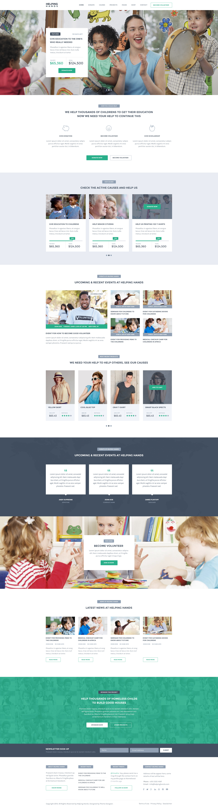
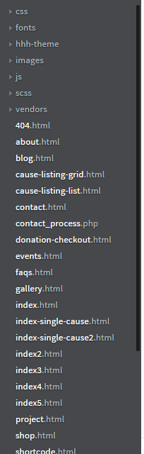
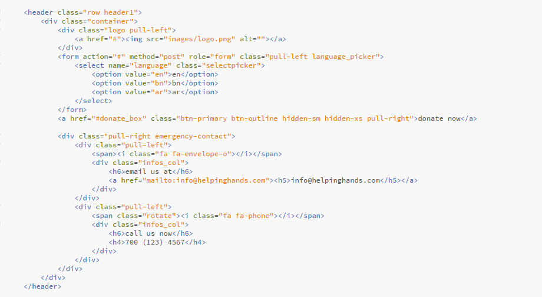
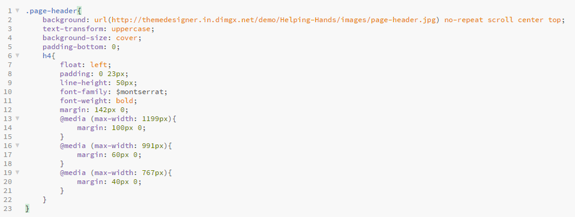
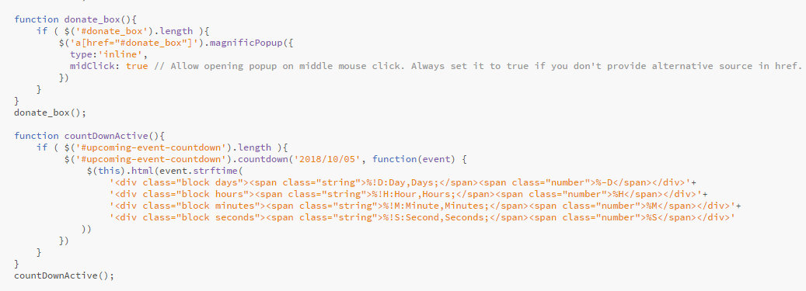
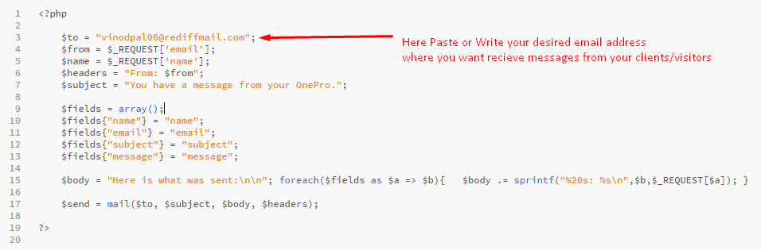
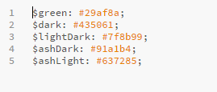

HelpingHands theme is designed for charity, NGO, non-profit organization, donation, church or a fundraising website.





Very Easy to show your location by google map. Add this shortcode to your HTML template
<div id="mapBox" class="row m0" data-lat="37.3818288" data-lon="-122.0636325" data-zoom="15"></div>
Now put your lattitude and logitude at data-lat & data-lon attribute, you can set zoom by data-zoom attribute too.
Open contact-process.php file from root directory and edit as describe

Want different Color for your template? Very Easy Open hhh-theme>variable.scss file. There we make some variable of colors, which contain our theme main colors. Just replace those colors with your desired color and then compile. Your color template is ready. :) ;)
Color list:

Once again, thanks for purchasing Helping Hands.